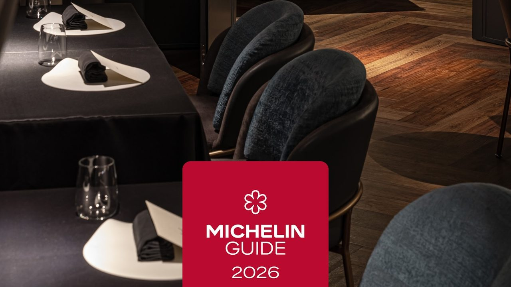
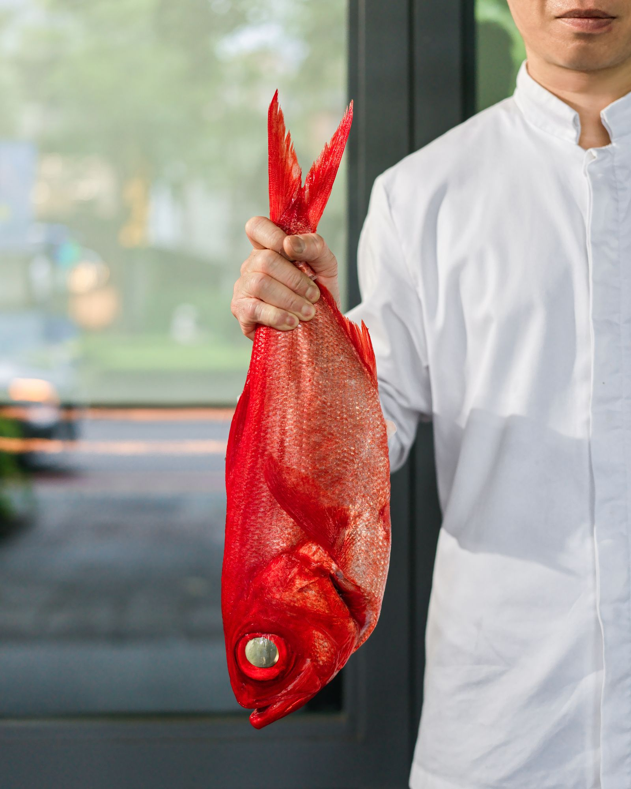
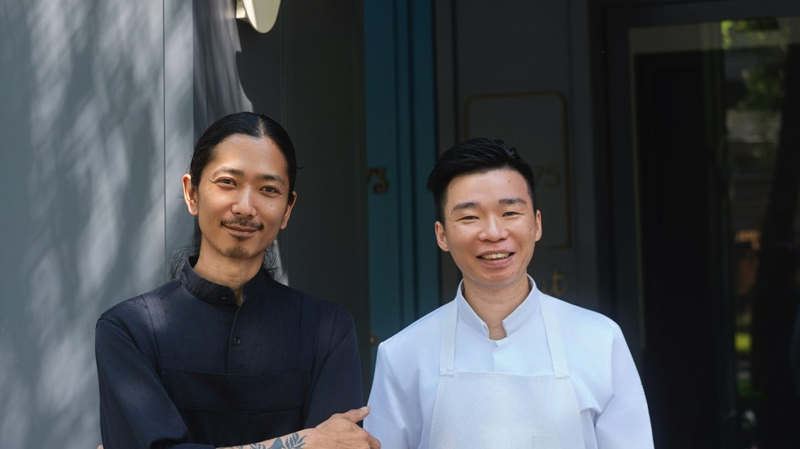

消息
消息
近一年的 de nuit。

2026 年 7 月
《臺灣米其林指南 2026》一星
de nuit 獲《臺灣米其林指南 2026》一星，自 2021 年起連年獲星。
這份肯定屬於團隊、生產者與合作夥伴，也屬於每一位來到餐桌的客人。

2026 年 6 月
2026 春夏菜單《風味博物誌》
春夏季節菜單《風味博物誌》上桌。
三條線索：大地風物、植物辛香、時間沉澱——從法國白蘆筍，到黑蒜。

2026 年 3 月 22–23 日
Sola × de nuit
巴黎米其林一星餐廳 Sola 主廚 Kosuke Nabeta 來到台北，與古俊基四手合作兩天。
午餐與晚餐，以單點形式呈現。
更多在 Instagram。